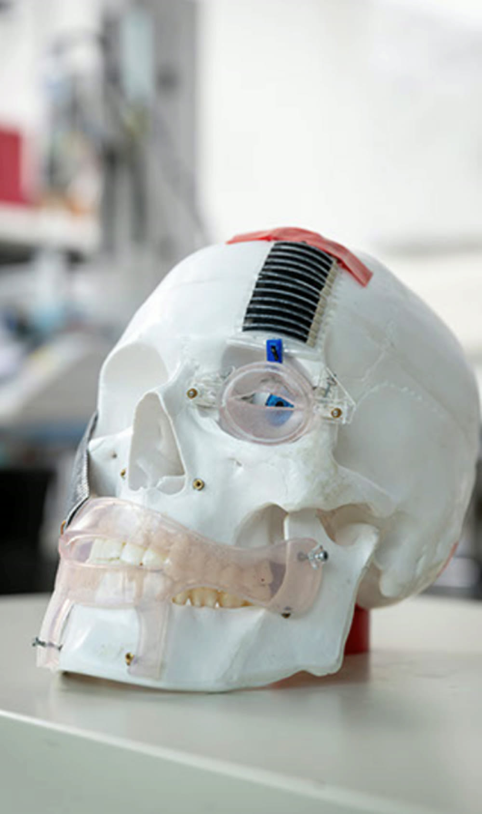
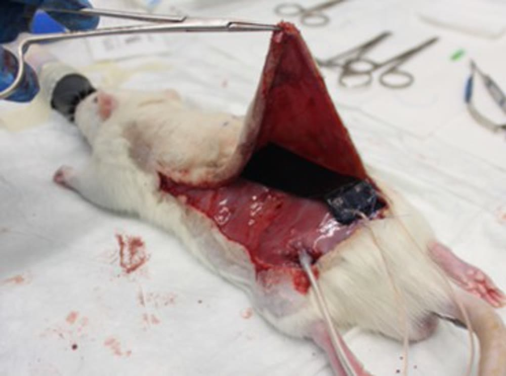

Patent filed
Journal cover, AMT 2025
Clinical partnership · USZ
Mechanically active implants for facial reanimation
Reinforced dielectric elastomer implants designed to restore expressions, like smiling and blinking, through directional deformation analogous to facial musculature itself. They displace tissue directly, with no motors and no gearboxes. The work spans actuator design, dynamic modeling, and real-time control, through to acute in vivo actuation and first steps towards triggering from a peripheral nerve interface, developed with the University Hospital Zurich Department of Plastic Surgery (Prof. Nicole Lindenblatt).